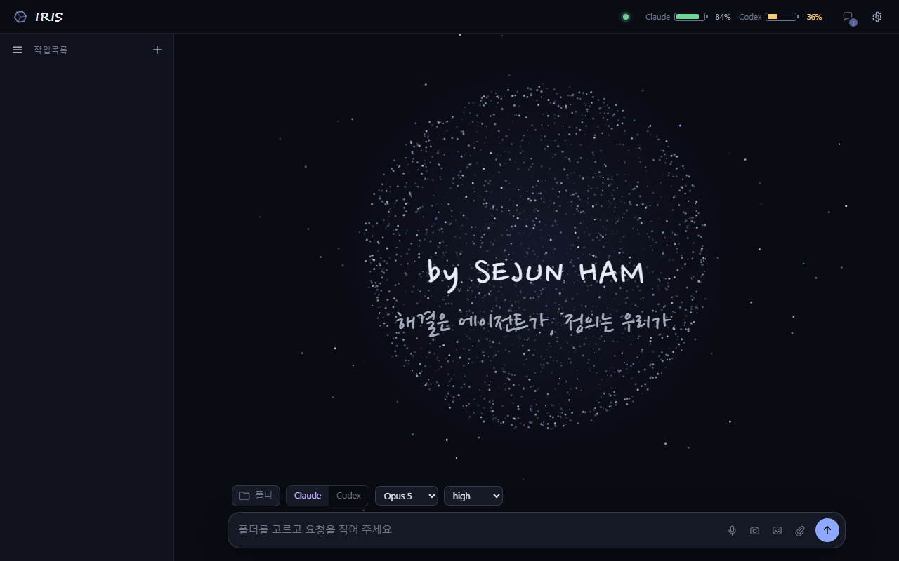
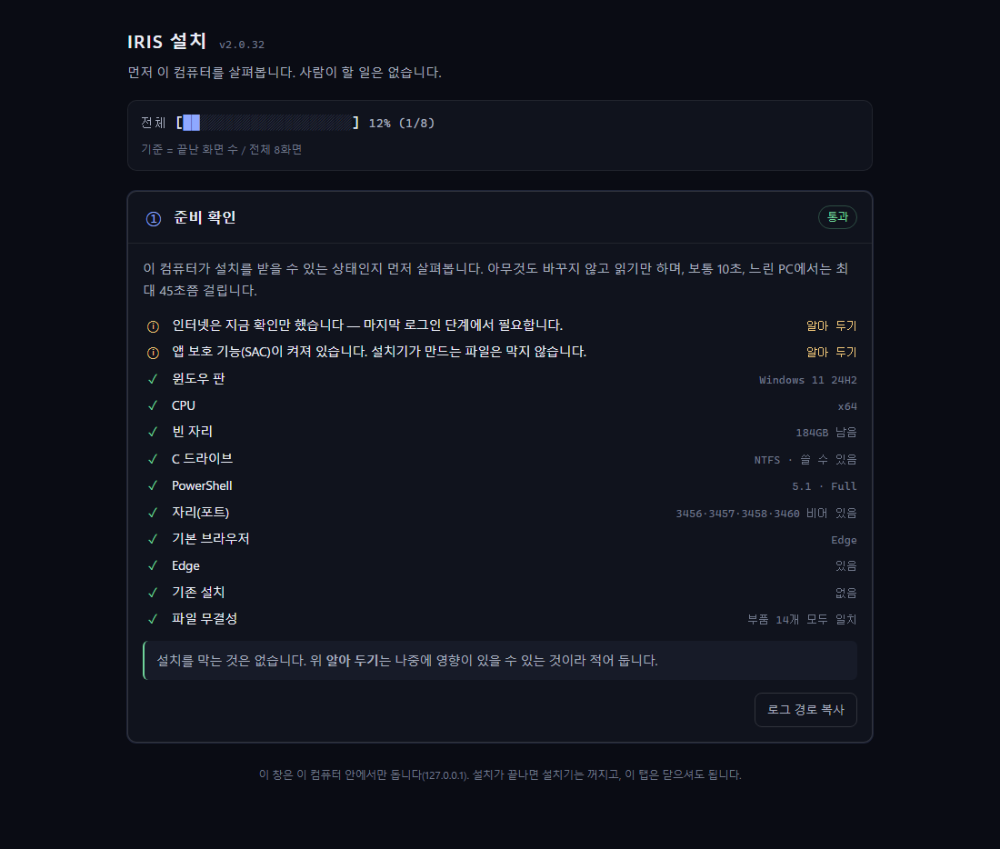
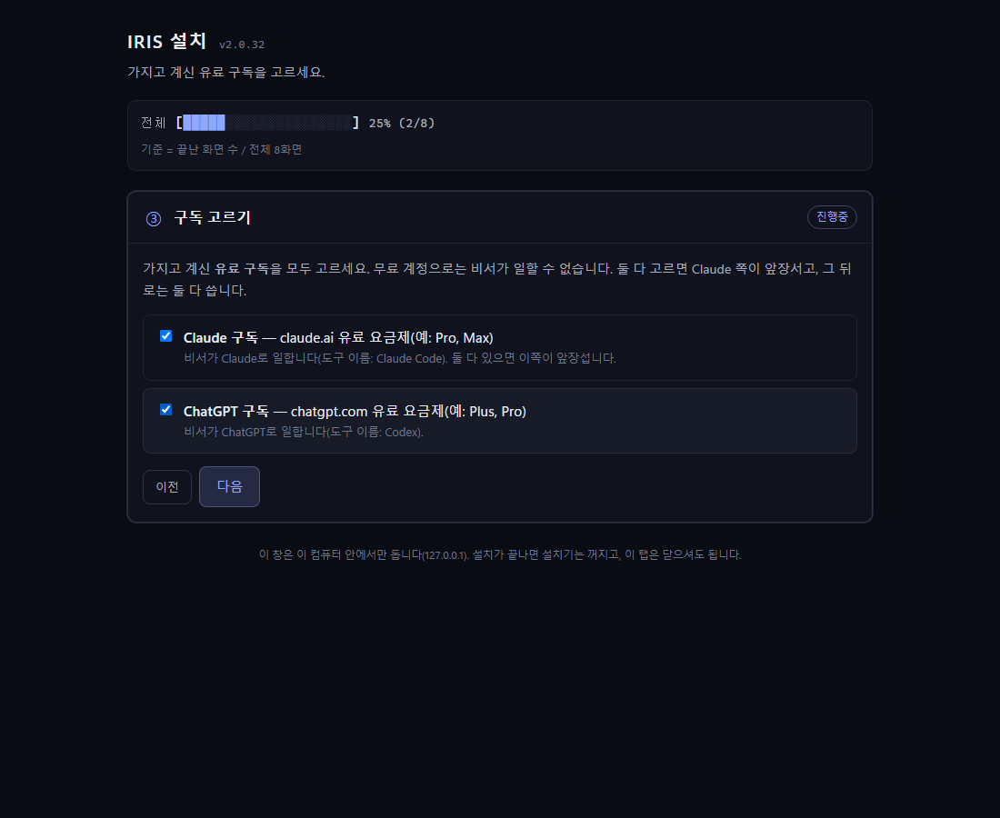
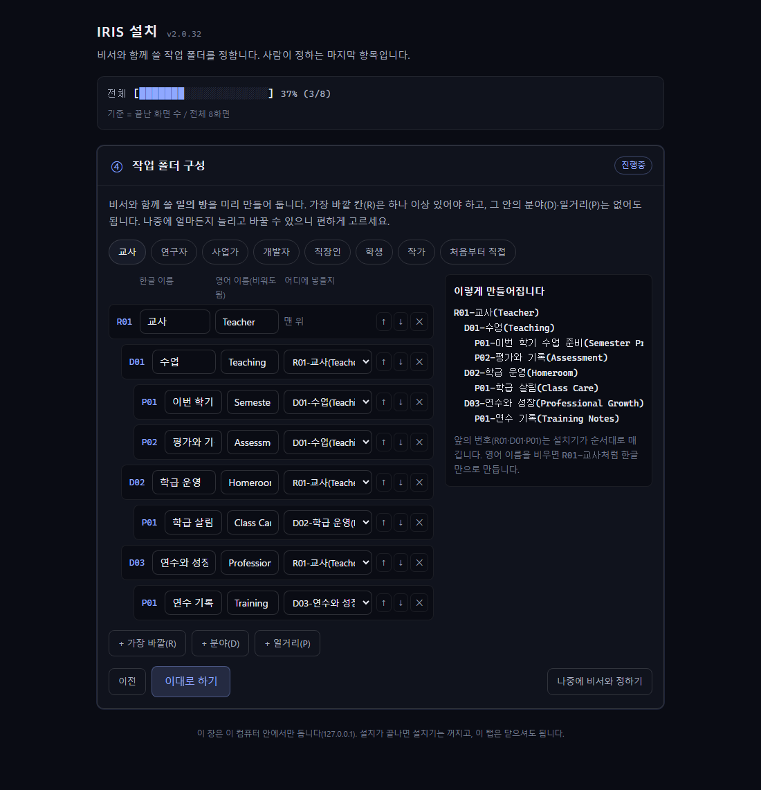
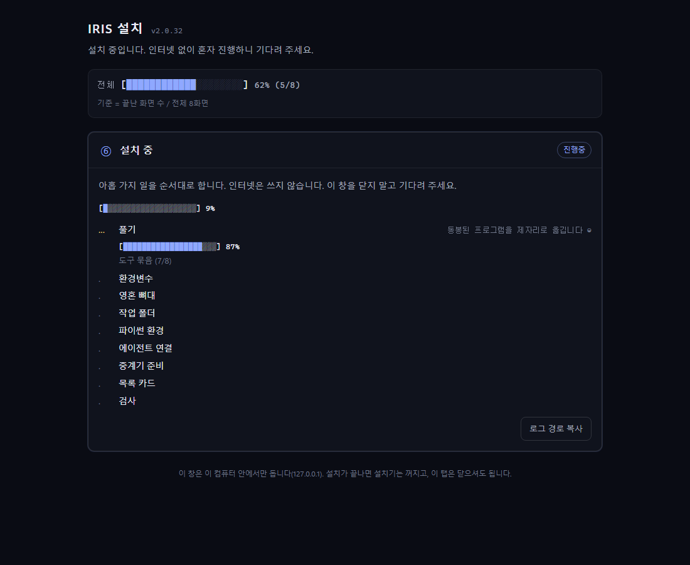
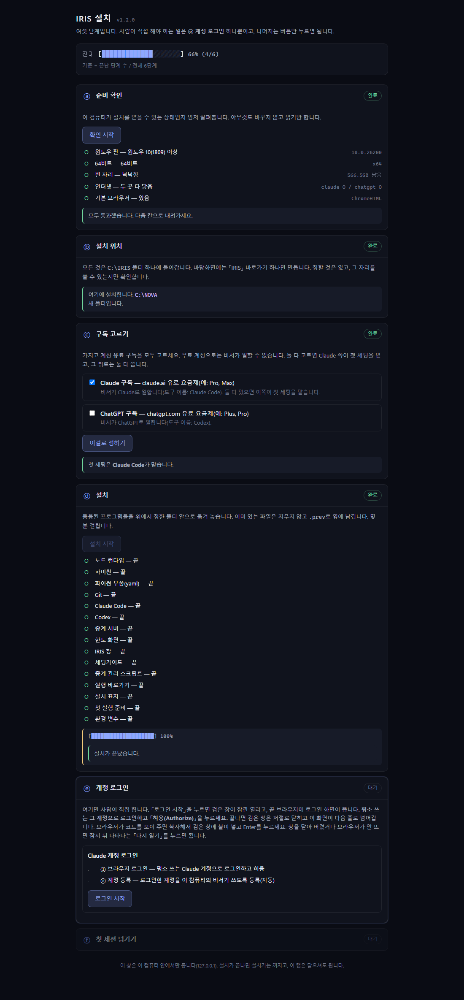

IRIS란
IRIS는 AI 에이전트가 내 일을 알고 일하도록, 일의 자리와 규칙과 도구를 내 PC에 갖춰 주는 AI 에이전트 워크스페이스입니다.
AI 비서에게 일을 맡기려면 사무실이 필요합니다. 일이 놓일 책상(폴더), 일하는 매뉴얼(규칙 파일), 손에 쥘 사무 도구(문서 도구), 여러 일을 한눈에 보는 지휘실(IRIS 창). IRIS는 이 사무실을 C:\IRIS 한 폴더에 꾸려 주고, 그 안에서 Claude Code·Codex가 일합니다.
폴더 체계
역할 → 분야 → 프로젝트 → 단계 순서로 자리를 잡습니다. 비서는 지금 어느 폴더에 있는지로 무슨 일인지 압니다.
규칙 파일
폴더마다 있는 AGENTS.md가 그 자리의 규칙입니다. 위 폴더의 규칙은 아래 폴더로 저절로 이어집니다.
에이전트와 창
Claude Code와 Codex가 실제로 일하는 손입니다. IRIS 창은 그 세션 여러 개를 한 화면에서 지휘합니다.
내 일에 맞춘 폴더가 미리 놓입니다
설치할 때 직업을 고르면 역할(R) → 분야(D) → 프로젝트(P) 폴더가 만들어지고, 폴더마다 규칙 파일이 하나씩 들어갑니다. 이름은 언제든 고칠 수 있습니다.
단계(S) 폴더는 프로젝트를 진행하며 비서와 함께 만듭니다. 「처음부터 직접」을 고르면 빈 나무에서 시작합니다.
터미널, 데스크탑 앱, 그리고 IRIS
같은 Claude Code라도 어디에서 쓰느냐에 따라 다릅니다. 일이 놓일 자리와 규칙까지 함께 설치하는 것은 IRIS뿐입니다.
| 터미널 | Claude Code 데스크탑 앱 | IRIS | |
|---|---|---|---|
| 처음 세팅 | Node·Git·Python·CLI를 하나씩 직접 설치 | 앱 설치 한 번, 문서 도구는 따로 | zip 하나, 더블클릭 한 번런타임·에이전트·문서 도구가 C:\IRIS 한 폴더에 |
| 일이 놓일 자리 | 사용자가 알아서 | 프로젝트 폴더를 고름 | 역할 → 분야 → 프로젝트 → 단계 폴더가 미리직업별 프리셋 7종 |
| 규칙 파일 | 직접 작성·관리 | 직접 작성 | 폴더마다 AGENTS.md, 위 규칙 자동 상속어느 폴더에서 열든 그 자리의 규칙을 앎 |
| 일의 지도 | 없음 | 없음 | 폴더·규칙을 읽어 지도(온톨로지)로 자동 정리"그 일 어디 있지?"에 비서가 바로 찾아감 |
| 배우는 규칙 | 직접 적어 둠 | 직접 적어 둠 | 되풀이된 교정을 규칙으로 자동 정리같은 실수를 두 번 고쳐 주면 다음부터 지킴 |
| 에이전트 | 한 번에 하나 | Claude만 | Claude Code + Codex대화 맥락을 둘 사이에 넘김 |
| 화면 | 글자가 흐르는 검은 창 | 깔끔한 대화 창 | 대화 창 + 세션 카드창을 닫아도 세션은 살아 있음 |
| 여러 작업 동시에 | 창 여러 개를 직접 오감 | 세션 여러 개를 열 수 있음 | 한 화면에서 여러 세션 지휘끝나면 알림, 허락 요청은 카드로 |
| 문서 작업 | MCP를 찾아 직접 설치 | 따로 설치 | 한글·엑셀·PPT·워드·PDF 도구 동봉한컴·오피스가 없으면 대기, 깔면 켜짐 |
| 인터넷이 없을 때 | 설치가 어려움 | 설치 불가 | 폴더·규칙·도구까지 오프라인 설치로그인·내려받기만 남은 일로 기록 |
| 되돌리기 | — | 설정이 여기저기 흩어짐 | 폴더 하나 지우면 끝전부 C:\IRIS 안, 설치 영수증을 남김 |
| 비용 | 구독만 | 구독만 | 구독만, IRIS는 무료(MIT) |
| 한계 | 가장 가볍고 유연함 | 가장 단순함 | 윈도우 64비트 전용 · 593.6 MB코드 서명이 없어 첫 실행 때 경고 한 번 |
기능

1 2 3 4 5 6 7- 01작업 목록세션 여러 개를 오갑니다. 세션마다 폴더·에이전트·모델을 따로 기억합니다.
- 02남은 한도Claude·Codex 계정별 사용량을 배터리로 보여 줍니다.
- 03설정업데이트와 확장 모듈 설치가 여기 있습니다.
- 04폴더어느 폴더에서 일할지 고르면, 그 자리의 규칙을 읽습니다.
- 05에이전트Claude Code와 Codex 가운데 고릅니다.
- 06모델과 사고 깊이터미널과 같은 선택을 시작 옵션으로만 넘깁니다.
- 07요청 입력글·음성·사진·파일로 요청합니다. 음성은 PC 안에서만 처리합니다.
왼쪽 작업 목록에서 세션을 오갑니다. 세션마다 폴더·에이전트·모델을 따로 기억합니다.
에이전트·모델·사고 깊이·권한 모드는 CLI 시작 옵션으로만 넘깁니다. 설정 파일은 건드리지 않습니다.
이미지·HTML·PDF·로컬 주소를 대화 안에서 바로 봅니다. 한/글·오피스 문서는 PDF로 바꿔 그 자리에 보입니다.
에이전트가 띄운 보조 작업이 칩으로 보이고, 누르면 그 기록을 읽기 전용으로 봅니다.
요청이 끝나면 작은 알림, 에이전트가 허락을 물으면 선택지를 카드로 보여 줍니다. 음성 입력은 PC 안에서만 처리합니다.
설정에서 공식 모듈을 골라 설치합니다. 첫 모듈은 IRIS 메신저로, 사람끼리 글과 파일을 종단 간 암호화로 주고받습니다.
일할수록 내 일에 맞춰지는 작업실
IRIS 창 뒤에서는 다섯 가지가 함께 돕니다. 내 일의 지도를 그리고, 고쳐 준 것을 배우고, 문서를 직접 다루고, 내 계정 여러 개를 이어 쓰고, 대화는 내 PC에 둡니다.
일의 지도
폴더마다 있는 규칙 파일의 머리말을 읽어, 무엇이 어디 있고 무엇이 무엇과 이어지는지를 지도(온톨로지)로 정리합니다. 폴더를 만들거나 옮기면 지도도 다시 그립니다. 비서는 "지난 학기 평가 계획 어디 있지?", "이 양식의 원본은?"을 이 지도에 물어 바로 찾아갑니다.
스스로 배우는 규칙
내가 결과를 고쳐 주거나 "앞으로는 이렇게 해"라고 말한 순간을 교훈으로 기록합니다. 같은 교훈이 되풀이되면 그 일에 맞는 폴더의 규칙 파일에 한 줄로 적고, 다음 세션부터 지킵니다. 마음에 안 들면 "그 규칙 빼"라고 말하면 됩니다.
- 01고쳐 줌"표는 맨 뒤 말고 본문에"
- 02교훈 기록한 문장으로 적어 둠
- 03또 고쳐 줌같은 교훈이 되풀이됨
- 04규칙이 됨규칙 파일에 한 줄, 다음부터 지킴
기록과 규칙은 모두 내 PC의 IRIS 폴더 안에만 남습니다.
문서를 직접 다루는 손
한/글·엑셀·파워포인트·워드·PDF를 비서가 직접 열고, 빈칸을 채우고, PDF로 바꿉니다. 한컴·오피스가 없는 PC에서는 기다렸다가, 깔면 켜집니다.
내 계정 여러 개, 창 하나
Claude·ChatGPT 구독 계정을 여러 개 연결해 두면 한 창에서 이어 씁니다. 한 계정의 한도가 차면 다음 계정으로 넘어가고, 남은 사용량은 계정별 배터리로 봅니다.
내 대화는 내 PC에
IRIS에서 나눈 대화 기록은 이 PC 안에만 저장됩니다. Claude·ChatGPT 웹이나 앱의 대화 목록에는 나오지 않고, IRIS도 밖으로 보내지 않습니다.
내려받기
zip 파일 하나
풀기 전에 속성 → 「차단 해제」
IRIS-설치.cmd
정할 것은 구독과 작업 폴더 둘





계정 로그인 하나 → IRIS 창
사람이 직접 하는 걸음나머지는 설치기가 합니다
필요한 것
- 윈도우 10(1809) 이상, 64비트
- C 드라이브 여유 3 GB 이상
- 인터넷 — 마지막 「계정 연결」 단계에서만 씁니다. 그 앞 단계는 인터넷 없이 됩니다.
- Claude 또는 ChatGPT 유료 구독 — 에이전트가 그 계정으로 일합니다
설치 3단계
- zip을 받은 뒤 압축을 풀기 전에 파일을 오른쪽 클릭 → 속성 → 아래쪽 「차단 해제」에 체크 → 확인. 그다음 압축을 풉니다.
- 풀린 폴더의
IRIS-설치.cmd를 더블클릭합니다. 파란 경고 창이나 「스마트 앱 컨트롤」 차단이 뜨면 코드 서명이 없어서입니다 — 설치 안내의 「윈도우가 막을 때」를 따라 하세요. - 브라우저에 열리는 설치 화면(여덟 화면)을 따라갑니다. 정할 것은 구독과 작업 폴더 둘, 직접 할 일은 계정 로그인 하나뿐입니다.
설치는 하나, 쓰는 길은 둘
- 바로 전부 쓰기 — 설치가 끝나면 로그인까지 이어서 합니다.
- 창·폴더·대시보드만 먼저 — 로그인은 건너뛰고 IRIS 창부터 써 봅니다. 남은 일은 IRIS 창의 「설치 이어 하기」로 언제든 마저 합니다.
자세한 정보
정확한 크기 593,563,124 bytes
SHA-256 b115b0368d0097e94b3bfd045bb24b40470d8bcd70a3ba365afc0bb043b1dc15
받은 파일이 원본과 같은지 보려면 PowerShell 에서 아래 명령의 결과를 위 값과 비교하세요.
Get-FileHash .\IRIS-Setup_v2.0.59_2026-11-10.zip -Algorithm SHA256내려받기 단추는 Cloudflare 서버에서 받습니다. GitHub에서 직접 내려받기
내려받기 단추는 GitHub 릴리스 첨부에서 받습니다.
자세한 정보
새 기능을 먼저 써 보는 판입니다. IRIS 안의 「업데이트」로는 오지 않고, 시험을 마치면 안정판으로 올라갑니다. 문제가 생기면 IRIS를 삭제(「내 작업 보관」)한 뒤 안정판을 새로 설치하세요.
정확한 크기
SHA-256
압축이 안 풀리면 파일 속성 창의 크기를 위 「자세한 정보」의 바이트 수와 견주어 보세요. 다르면 내려받기가 중간에 끊긴 것이니 다시 받으면 됩니다.
이미 설치했다면 IRIS 창의 설정 → 업데이트에서 한 번에 갱신됩니다. 새 zip을 실행해도 「업데이트 시작」이 나오고, 자료·설정·로그인은 그대로 둡니다. 1.x에서 2.0으로 넘어올 때만 새로 설치합니다(기존 자료는 그대로).
설치 안내에 화면별 설명과 막혔을 때의 대처가 있습니다.
안에 든 것
전부 C:\IRIS 한 폴더에 들어갑니다. 바깥에 생기는 것은 바탕화면 「IRIS」 바로가기 하나뿐이고, 지우려면 그 폴더를 지우면 됩니다.
| 부품 | 하는 일 |
|---|---|
| Node.js · Python · Git | 에이전트와 창이 도는 바탕입니다. 함께 들어 있어 따로 설치하지 않습니다. |
| Claude Code · Codex CLI | 실제로 일하는 에이전트입니다. Codex는 동봉되어 있고, Claude Code는 「계정 연결」 단계에서 내려받습니다. 둘 다 내 구독 계정으로 로그인합니다. |
| 계정 중계기와 한도 화면 | 구독 계정이 여럿이어도 한 창에서 쓰게 해 주는 작은 서버와, 계정별 사용량 화면(IRIS 창 머리의 배터리)입니다. 둘 다 PC 안에서만 돕니다. |
| IRIS 창 | 세션 여러 개를 한 창에서 지휘하는 데스크톱 앱입니다. 첫 확장 모듈인 메신저도 함께 들어 있습니다. |
| 문서 자동화 도구 | 한/글·엑셀·파워포인트·워드·PDF를 다루는 도구 서버입니다. 한컴·오피스가 없는 PC에서는 「대기」로 두었다가, 깔면 켜집니다. |
| 온톨로지 도구 | 폴더와 규칙 파일을 읽어 일의 지도를 만들고, 비서가 그 지도에 위치·원본·관계를 묻게 해 줍니다. 지도는 한 장짜리 화면으로도 볼 수 있습니다. |
| 자기개선 도구 | 고쳐 준 실수와 "앞으로는"을 교훈으로 기록하고, 되풀이되면 규칙 파일에 규칙으로 적습니다. 기록은 PC 안에만 남습니다. |
| 규칙 파일과 인수 문서 | 설치기가 작업 폴더·규칙·도구 세팅을 끝내고 인수 문서를 남깁니다. 첫 실행 때 비서는 그 문서를 읽고 인사부터 합니다. |
모든 소스는 MIT 허가서로 공개되어 있습니다. 동봉 부품의 허가서 목록은 zip 안 payload/licenses/NOTICES.md에 있습니다.
구성 요소와 새 소식
세 부품의 지금 판은 방문할 때마다 GitHub에서 새로 읽어 옵니다. 그 아래는 IRIS가 지금까지 걸어온 길입니다(최근 것이 위).
- 안정판 2.0.59 · 창 2.102.0 지금 안정판도구 화면 새 단장
도구를 Skill·MCP·Plugin으로 나누고, 엄선한 도구를 단추 하나로 설치·제거합니다. 모델 선택 이름이 실제로 쓰는 모델과 늘 같고, 같은 이메일의 Claude·Codex 계정을 둘 다 더할 수 있습니다.
- 2.0.55 · 창 2.99.0첫 안정판 — 두 갈래 배포
새 판은 최신판으로 먼저 시험하고, 확인한 판만 안정판으로 올립니다. 새 PC에서 Claude 첫 실행 안내창이 대화를 가로막던 문제를 고쳤습니다.
- 2.0.53로그인 열쇠 만료 미리 알림
열쇠마다 만료일과 남은 날을 보여 주고, 만료 3일 전부터 알려 주며, 단추 하나로 갱신합니다.
- 2.0.52MCP 중계기
세션은 도구 목록만 먼저 받고, 실제 MCP는 그 도구를 처음 쓸 때 그 세션에만 켭니다. 쓰는 것만 켜서 메모리를 아낍니다.
- 2.0.46 · 창 2.92.1첫 실행 튜토리얼
처음 설치한 PC에서 내 폴더 만들기부터 안내하고, 내 일의 지도를 역할 캐릭터와 폴더 나무로 보여 줍니다.
- 2.0.45에이전트가 스스로 최신 판으로
Claude Code·Codex가 스스로 최신 판으로 올라갑니다.
- 2.0.0zip 하나로 전부 설치
아무것도 깔려 있지 않은 새 윈도우 PC에서 zip 하나를 두 번 클릭하면 IRIS 체계 전체가 끝까지 설치됩니다.
- 메신저 0.1첫 확장 모듈, IRIS 메신저
사람끼리 글과 파일을 종단 간 암호화로 주고받습니다. IRIS 창 안에서 바로 씁니다.
자주 묻는 질문
유료 구독이 꼭 필요한가요?
네. IRIS는 AI를 따로 만들지 않고, 이미 쓰는 Claude 또는 ChatGPT 구독으로 Claude Code·Codex를 돌립니다. IRIS 자체는 무료입니다.
내 자료와 대화는 어디로 가나요?
내 PC 안에 남습니다. IRIS 창·중계기·설치기는 PC 밖으로 자료를 보내지 않습니다. 에이전트가 AI 회사 서버와 주고받는 내용은 각 에이전트의 정책을 따릅니다.
지우고 싶으면요?
C:\IRIS 폴더와 바탕화면 바로가기를 지우면 끝입니다. 레지스트리나 시스템 폴더에는 아무것도 쓰지 않습니다.
맥이나 리눅스에서도 되나요?
지금은 윈도우 10/11 64비트만 됩니다. 다른 운영체제는 계획에 있지만 날짜는 정하지 않았습니다.
이미 Claude Code가 설치되어 있으면 충돌하나요?
아니요. IRIS는 자기 폴더 안의 별도 사본을 쓰고, 기존 설치본과 설정에는 손대지 않습니다.
새 판이 나오면 다시 설치해야 하나요?
아니요. IRIS 창의 설정 → 업데이트에서 한 번에 갱신되고, 새 zip을 실행해도 「업데이트 시작」이 나옵니다. 어느 길이든 자료·설정·로그인은 그대로입니다. 1.x에서 2.0으로 넘어올 때만 새로 설치합니다(기존 자료는 그대로).
ChatGPT 구독만 있어도 되나요?
네. 설치기에서 ChatGPT만 고르면 Codex가 앞장섭니다. Claude Code도 함께 설치되어 IRIS 창에는 처음부터 Claude·Codex 단추가 둘 다 보이고, 나중에 Claude 구독이 생기면 한도 화면에서 계정만 더하면 됩니다.
구독 계정이 여러 개면 어떻게 쓰나요?
IRIS 창 머리의 한도 화면(배터리)에서 내 계정을 더하면 됩니다. Claude와 ChatGPT 계정을 섞어 더할 수 있고, 한 계정의 한도가 차면 다음 계정으로 이어서 일합니다. 계정마다 남은 사용량이 따로 보입니다.